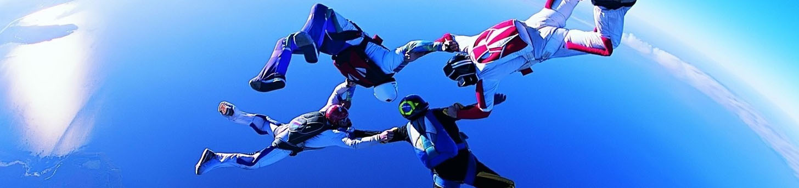

Fallskjermhopping i Østfold

Her finner du mer om å hoppe fallskjerm
Er du interessert å finne ut mer om hvordan det er å hoppe fallskjerm? Da kan du lese mer om det på denne siden.
Vi er en av de mest aktive Fallskjerm klubbene i landet. Vi hopper alle helger fra 1.mai til ut oktober, alle onsdager, en rekke fredager samt hverdager i juli. I ukedagene er det rimeligere å hoppe enn i helgene. Sjekk ut kalenderen for hvilke dager vi har åpent gjennom sesongen.
Følgende kan hoppe:
- Fylt 18 år
- Eller fra 16 år med foresattes godkjennelse
- som ikke lider av sukkersyke, epilepsi, hjertefeil. Ved tvil så ta kontakt med oss.
- Vekt: maks 95 kg/ Høyde: maks 190cm.
- Hopperen må ikke være påvirket av rusmidler
- Godkjent legeerklæring hvis du er over 75 år(Må fremvises ved fremmøte)
Pris
- Fallskjermhopp uten video og stillbilder: 3490,-
- Fallskjermhopp med video og stillbilder: 4490,-
Fallskjermhoppet inkludere:
- Opplæring på bakken
- 20 minutters flytur
- Utsprang fra 4000m - med 35 sek. fritt fall.
- 5 minutter flytur i fallskjerm
- Obligatorisk medlemskap i Østfold Fallskjermklubb og i Norges Luftsportsforbund
- Ulykkeforsikring
Dette skjer den dagen hoppet skal utføres:
Eleven møter sin instruktør og får en gjennomgang av hvordan et fallskjermhopp vil bli utført. Det vil bli en 15 min briefing på hvordan man skal forholde seg i flyet på vei opp, og hvordan dere exiter flyet og hvordan man forholder seg i frittfall, i skjerm og under landing. Vi har utstyret du trenger for å gjennomføre hoppet. Du vil få en hoppdress til å ha utenpå dine private klær samt et fallskjermseletøy. Vi vil anbefale deg at du kler deg komfortabelt og etter værforholdene. Det er viktig at du har gode sko når du ska hoppe, helst joggesko.
Flyturen opp til 4000 meter tar mellom 15-20 minutter. Dere går ut til frittfall i ca 250 km/t som har en varighet på 35 sekunder. Hoppet tar normalt 1 time og 30 minutter fra dere ankommer.